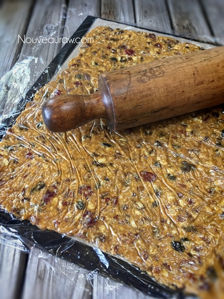
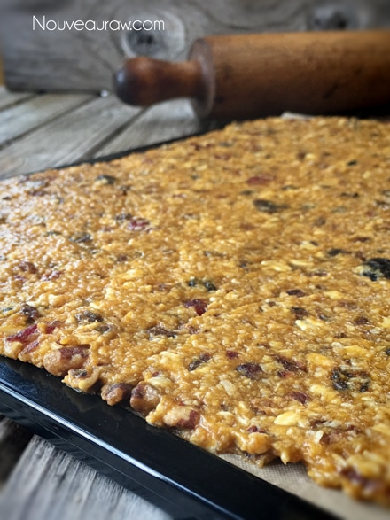
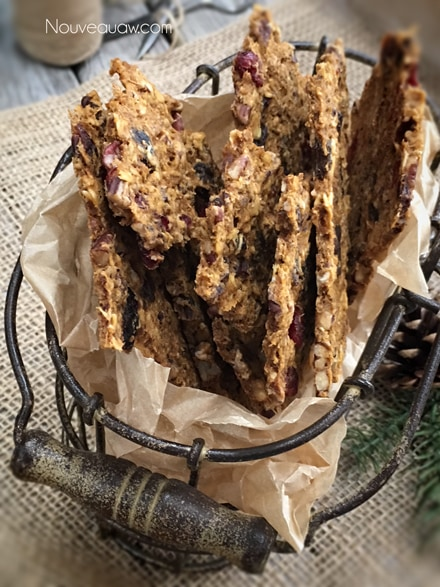

Pumpkin Raisin Pecan Granola Brittle
~ raw, vegan, gluten-free ~
Hi, I am Amie Sue, and I have a fetish… for making granola. It’s true; once I started making granola recipes, I just couldn’t stop! They are so easy to make, and you can tailor them to your ever-present cravings! It is dangerous for me to even walk into the kitchen.
I may be walking straight to the faucet to get a drink of water and boom! There sits an apple… “ooh I can make some granola using that!”….boom! there sits a pumpkin… “ooh I can make some granola using that!” there sits some dried fruit… “ooh I can make some granola using that!” Oy! Someone stop me or find an army for me to feed. haha
Before you lose your attention; I want to talk about ingredients real quick. I added protein powder to this recipe to bump up the nutrition. It is optional. Feel free to use any dried fruit that strikes your fancy, if it is large, dice it into bite-sized pieces.
If you can’t eat oats, you can use the same measurement of sprouted buckwheat. If you wish to make this nut-free, replace the pecans with an assortment of seeds. With any substitutions, always think of what the end flavor will be. I hope this gives you some inspiration. Enjoy!
Ingredients:
Yields 1 solid 14 x 14” tray
Dry Ingredients:
- 2 cup raisins or dried cranberries
- 1/4 cup vanilla protein powder
- 3-4 tsp pumpkin spice
- 1/2 tsp Himalayan pink salt
Wet Ingredients:
- 5 cups raw, gluten-free, rolled oats, soaked
- 2 cups raw pecans, soaked
- 1 3/4 cup pumpkin puree
- 1/4 cup raw cold-pressed coconut oil, melted
- 1/3 cup raw maple syrup
- 2 tsp vanilla extract
Preparation:
- In a large bowl, combine the raisins, protein powder, pumpkin spice, and salt. With your fingers break up all the raisins, coating them with the dry ingredients. This will prevent large clumps of raisins within the granola.
- After soaking the oats, drain and rinse them until the water starts to run clear. Squeeze out as much of the excess water as possible.
- Add the oats, pecans (be sure to drain the soak water), pumpkin puree, oil, sweetener, and vanilla. Mix everything well, dispersing all the wonderful flavors.
- You can use any liquid sweetener of your choosing.
- If you can’t find any pumpkins, you can use canned. Just look for organic, BPA-free canned.
- Sweet potato can also be used in place of pumpkin.
- You can leave this batter more on the chunky side by just stirring everything together, or you can pulse it in a food processor a few times to bread it down some. I have done it both ways and enjoy them. In the photo above, I broke down the batter a bit.
- Taste test the batter… Is it sweet enough? If not, add more sweetener. The sweetness level can be greatly affected by the pumpkin that you use.
- Line the dehydrator tray with a mesh and non-stick sheet. Spread the batter evenly on the sheet and square up the edges.
- Cover with plastic wrap and roll it smooth to all edges with a rolling pin.
- If you don’t have teflex sheets, you can use parchment paper (not wax paper! it will stick).
- Another option is to drop clusters of batter on the dehydrator sheet, for another look.
- Dehydrate at 145 degrees (F) for 1 hour, then reduce to 115 (F) for approximately 16 hours or until desired dryness is achieved.
- Halfway through the process, flip the granola over onto the mesh sheet and continue to dry until it snaps when bent.
- The dry time varies based on your climate, humidity, machine, and how full the machine is.
- Allow the brittle to cool, then snap into pieces and store in an airtight container. To extend the shelf life, you can store it in the fridge or freezer.
I recommend “pie” pumpkins, which weigh in at 2 to 5 lbs., with flesh that is firm and sweet. For best flavor and nutrition, look for organically grown sugar pumpkins, a variety known for its excellent sweet flavor and succulent texture.
It doesn’t matter how long the pumpkin has been stored, only that the outside is undamaged. Look for smooth, heavy pumpkins that have no cuts or bruises. Most importantly, look for a deep, rich orange color, a sign of bioflavonoids and thus flavor. The stem should still be attached, indicating a healthy pumpkin.
- Sugar Pie – small to medium in size with sweet orange flesh. They are called sugar-pie pumpkins because they make the best filling for a sweet pie with their high sugar content that gently caramelizes when cooked releasing a rich, creamy flavor.
- Delicata – small, white pumpkin with green stripes and yellow flesh. With a dry texture and nutty flavor, it is best in heavily seasoned savory dishes.
- Onion Squash – Orange and oval with a soft flesh that’s perfect for soups and pasta.
- Baby Bear – Small, sweet, and firm with a fine stem, this variety is very versatile and great for either savory or sweet dishes.
- Crown Prince – Blueish gray pumpkin, great for roasting or sauteing.
The Institute of Culinary Ingredients™
- To learn more about maple syrup by clicking (here).
- What is Himalayan pink salt and does it matter? Click (here) to read more about it.
- Is coconut butter the same as coconut oil? Click (here) to find out.
- Are oats gluten-free? Yes, read more about that (here).
- Are oats raw? Yes, they can be found. Click (here) to learn more.
- Do I need to soak and dehydrate oats? Not required but recommended. Click (here) to see why.
Culinary Explanations:
- Why do I start the dehydrator at 145 degrees (F)? Click (here) to learn the reason behind this.
- When working with fresh ingredients, it is important to taste test as you build a recipe. Learn why (here).
- Don’t own a dehydrator? Learn how to use your oven (here). I do however truly believe that it is a worthwhile investment. Click (here) to learn what I use.



© AmieSue.com